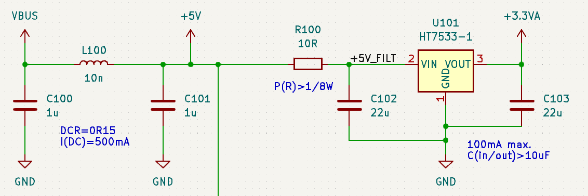
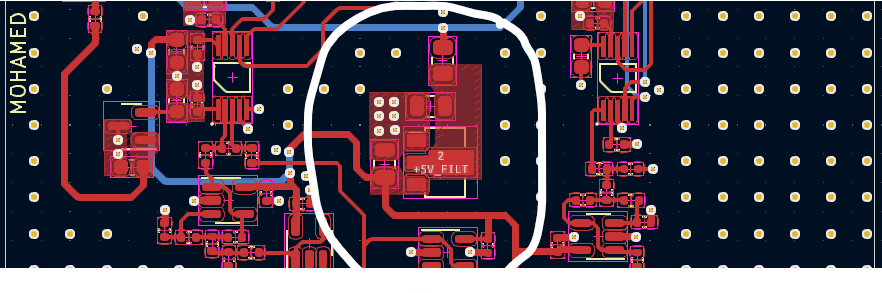
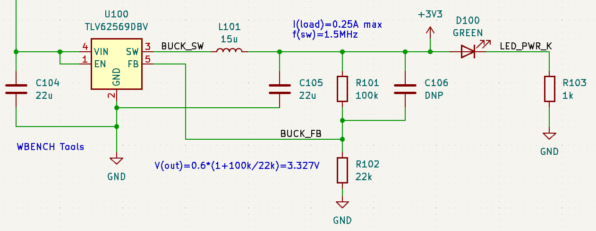
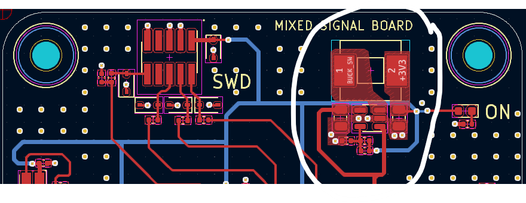
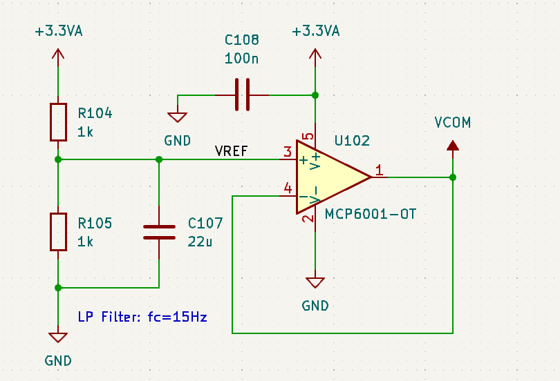

Power Management Architecture
Understanding the critical role of power management in electronics, particularly in mixed-signal PCBs, involves a deep dive into the components that constitute the system. Let's simplify and expand on each section based on the images you've provided.
Input Filtering & Analogue / Digital Supplies
 In the power management design, VBUS undergoes initial filtering through capacitors C100 and C101, accompanied by inductor L100. The inductor's DC resistance is critical in this arrangement, preventing the creation of a resonant circuit which could lead to unwanted oscillations.
The filtered VBUS voltage is then distributed to two key components: the LDO (Low Dropout) regulator and the Buck converter. Focusing first on the LDO regulator, HT7533-1, it's tasked with providing a stable 3.3V output from a 5V input, specifically for analog circuitry. Its configuration is straightforward, necessitating only a minimal arrangement of capacitors C102 and C103 for smoothing, and a resistor, R100, which functions alongside C102 to create an RC filter, filtering out residual high-frequency noise.
Buck Converter
 Moving on to the Buck converter, model TLV62569DBV, this component requires an input capacitor C104, which acts as an energy reservoir smoothing out voltage dips and surges as the input voltage fluctuates. The inductor L101 and capacitor C105 form the output filter, essential for maintaining a clean DC output by mitigating the ripple inherent to switching regulators. The feedback network, comprised of resistors R101 and R102, plays a pivotal role in regulating the output voltage by providing a reference for the converter to adjust its duty cycle accordingly.
An LED connected via R103 serves as an indicator, providing visual confirmation of the power status, a simple yet essential feature for troubleshooting and user interaction with the hardware.
Bias Generator
In the bias generator circuit, a 3.3V power supply is neatly halved using a resistor divider composed of R104 and R105, establishing a mid-supply reference voltage (VREF). This, along with capacitor C107, forms a low-pass filter with a cutoff frequency of 15Hz, smoothing out any high-frequency noise from the power supply and providing a clean VREF.
The operational amplifier, configured as a voltage follower with its non-inverting input tied to VREF, ensures that VCOM mirrors this stable midpoint voltage. This is vital because it allows the connected AC signals to be superimposed onto this bias voltage via coupling capacitors, enabling the full range of the analog signal to be utilized without clipping.
Moreover, decoupling capacitor C108 is a crucial component that acts to stabilize the VREF node by shunting any transient noise spikes to ground, ensuring that the op-amp's output, VCOM, is as steady as possible. This stability is key to maintaining signal integrity in the analog sections of the circuit.
Next post: Microcontroller Integration